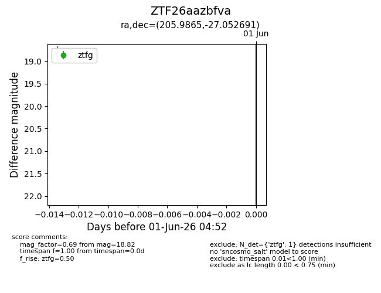
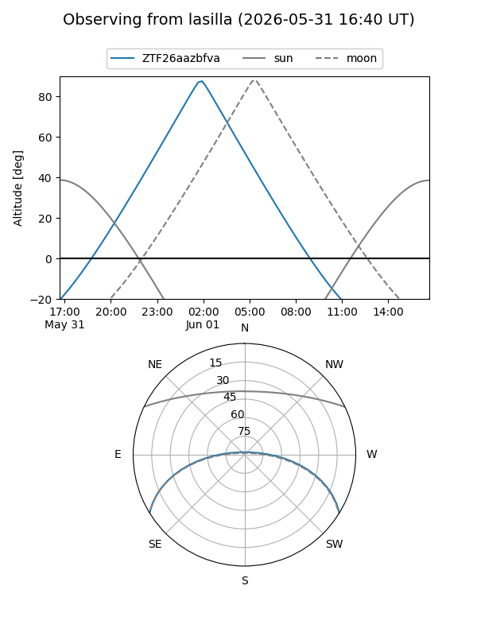
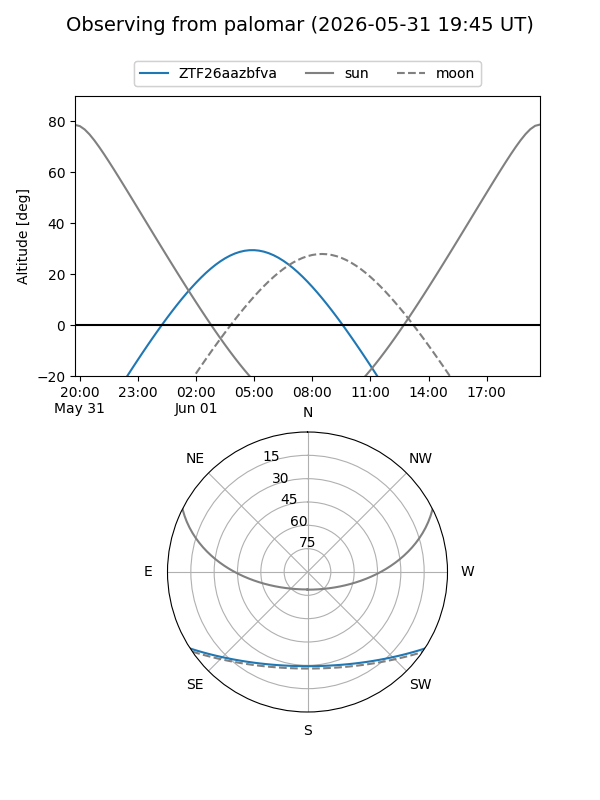

ZTF26aazbfva
Target ZTF26aazbfva at 2026-06-01 04:53
Aliases and brokers:
lsst-FINK: link
lsst-Lasair: link
lsst-ALeRCE: link
ztf-FINK: link
ztf-Lasair: link
ztf-ALeRCE: link
alt names
ZTF26aazbfva (ztf,fink_ztf)
Coordinates:
equatorial (ra, dec) = 205.9865,-27.05269
equatorial (HMS+DMS) = 13:43:56.76,-27:03:09.69
galactic (l, b) = (317.1162,+34.36866)
Flags:
Photometry:
last ztfg=18.82
1 ztfg detections
Lightcurve

Visibility


Additional plots